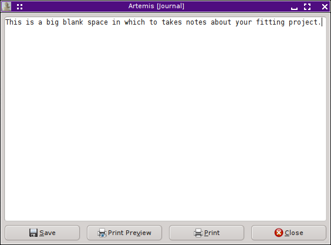

Home
Introduction
Starting Artemis
The Data window
The Atoms/Feff window
The Path page
The GDS window
Running a fit
The Log & Journal windows
The History window
Monitoring things
Managing preferences
After the fit completes and the result of the fit is plotted, the Log window is displayed. The “Log” button on the bottom left of the Main window is used to display and hide this window.
|
All of the details of the fit are recorded in the text displayed in this window. Below the descriptive fitting properties displayed at the top in blue text are the main fitting statistics, including χ² , χ²ν , the R-factor, ε (k), ε (R), and counts of the number of independent points and the number of guess parameters. Those are followed by the details of the happiness evaluation. (See the chapter on happiness for a complete description of this heuristic, non-statistical parameter.) Two lines of fitting statistics are colored with the same color determined from the happiness and used for the Fit button and the various plotting buttons. Following the statistical parameters are tables of the guess, def, set, restraint, and after parameters. Error bars are given for the guess parameters. Correlations between guess parameters follow. Were you to scroll down in the window shown in this picture, you would find tables of evaluated path parameters for each of the paths and each of the data sets. Note that unceretainties are not propagated through to the path parameters. In the current version of ARTEMIS, that chore is left for the user. The text in the log file is identical to the log text from the most recent fit in the History window. The buttons at the bottom of the Log window can be used to save the log to a text file or to print its contents. |

|
|
Clicking the “Journal” button on the right side of the Main window displays and hides the Journal window. This is simply a blank text box in which you can write notes about your fitting project. The text found in this box will be saved to and restored from the project file. The buttons at the bottom of the Log window can be used to save the journal to a text file or to print its contents. |
 |